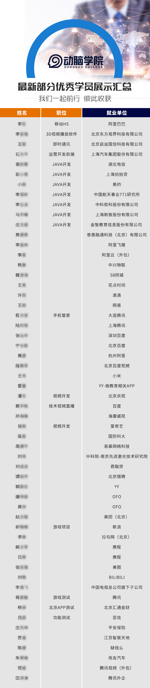

-
学员心声
王宇
工作单位：中国电信广州研究院
职位：前端工程师
年薪：13W
学习心得：
从最初的公开课试听，到成为VIP学员系统培训地学习，短短6个月，却是我今年收获成长最多的过程，我很珍惜在动脑学院上课的时间，重视在这里学到的每一个知识点，课后也会经常问老师问题，这也不断促使我技能稳步提高，培训课程的每一小步都推动我在前端开发这条路上走了一大步。前端开发技术在不断更新，我也必须紧跟发展的脚步，这半年内，我是从最初最基础的页面样式，到数据交互，再通过不断的逻辑训练以及实战训练进入到高端课程，技能增长的同时，视野也不断开拓。虽然过程很漫长，但学习知识不能一蹴而就，必须稳扎稳打，每一次的锤炼都让我在前端工作中站得更稳。
在动脑学习，一方面不光是收获了满满的技术本领，从各大互联网公司技术牛人老师那里学到了前端最新应用框架，让我技术猛增，达到了当初来学习的目的；另一方面还意外收货到了很多一起在前端这条路上携手向前友爱的同学。我们虽然来自四面八方，但在动脑课堂，在动脑前端旗舰班里，我们都是一家人。 通过这段时间的学习培训，我能把知识梳理成系统的结构，头脑中的知识层次也更加清楚，因此，我变得更加自信，更加从容。碰到棘手的需求也知道该如何统筹全局，运用自己掌握的知识，逐个击破，以后工作中会面临很多挑战，但我已经不再害怕，因为动脑会一直与我同在。王世成
工作单位：上海星红桉数据科技有限公司（合肥研发中心）
职位：前端工程师
薪资待遇：年薪21W
学习心得：
在一个很长的过程中，我一直在寻找一家适合自己的培训机构提升技能，直到参加了动脑学院的大前端培训课程，才实现了前端开发质的的飞跃。在这里学会了JS面向对象和封装的思想及应用，学会了应用Gulp来构建前端项目，学会了高级UI的相关课程来提升Web应用的交互体验，学会了NodeJS来进行Web应用的全栈式开发等等。总之，在动脑学院我的技能提升很快，也找到了未来的技术发展之路--那就是朝着全栈架构师方向，继续努力！
当然，动脑学院的课程服务也是做得最好的！讲师很有耐心的解答我遇到的所有问题，助教老师经常主动了解我的学习情况。感谢动脑学院带给我的这些！桑秋生
工作单位：深圳市贤利智科技
职位：前端工程师
薪资待遇：年薪20W
学习心得：
有幸第一批加入动脑学院前端培训班，其实是慕名而来，早就听闻star老师讲课生动，并且能把知识点讲的学生易于理解和接受。对于我来说有一定的基础，但还是跟着老师从基础课程开始学起，查漏补缺，虽然html、css、js的基础知识内容比较枯燥，但是通过star幽默风趣的讲解，理解js的高级课程的时候收货非常的大，尤其是对原型、继承、多态、闭包的知识有了全新的认识，从底层的内存结构去理解，很多问题都迎刃而解了。这个过程对我后面工作中的帮助其实很大，也深刻的感受到了基础牢固对不断提升自身开发水平的重要性，也对后期学习其他框架reactjs, nodejs 等打下了一个非常坚实的基础。
在动脑学习，学到我想要的知识技能是一方面，另外学习体验是我的一大意外收获。前端整个服务组老师都时刻从有利于学生的角度出发，有好的课程，有好的技术资讯内容，有好的工作机会都会第一时间与我们分享。当自己技术遇到瓶颈，班主任和老师都会细心的察觉，鼓励我要持之以恒。时刻感受到来自同学，来自老师，来自这个大集体的关心，精神层面的满足是我下定决心坚持学好前端的充足动力。希望动脑越来越好，我们前端每位同学都以自己是动脑学员而自豪。Jellal
工作单位：北京时时保科技有限公司
职位：Android项目组组长
薪资待遇：年薪30W
学习心得：
身为北漂的我，在北京经历过一段挣扎的时期，进进出出过一些行业。随着自己对市场经济的慢慢了解，以及近几年互联网的飞速发展，我最终决定学习Android开发。想法确定之后，我就开始对北京的几个培训机构进行对比、筛选。选择培训机构是一件非常伤脑筋的事情，北京大大小小的Android培训机构很多，究竟该选择哪家呢？在网上筛选联系过一些培训机构，也去实地考察过一些机构，招生老师讲的天花乱坠，各种优惠很多，形容的前景也是无限美好。可是当我咨询具体培训老师时，却一带而过，并没有指明是由哪位老师授课，只说是经验丰富的老师。择校贵在择师，在不了解老师的情况下，我怎么能放心的报名呢？正在我伤脑筋的时侯，朋友告诉我线上有一家叫动脑学院的Android课程，并去试听了一下，发现老师讲的都是很多干货，以前不是很相信线上培训机构，但自从听到ricky老师讲解后，发现线上教育比线下教育的教学内容更丰富。无论是在教学质量与丰富度方面都比线下做的更好。于是，我很荣幸的成为了动脑学院Android 2016年9月班的一员！
一转眼在动脑学院Android 9月份班已经两个月了，教我们五大专题中的Jason老师的是被学员亲切的jason老司机，他是动脑学院Android教学总监，有着丰富的项目开发经验和独到的教学方式。jason老师不仅编程功底深厚，而且有着极强的逻辑和清晰的思路，不仅教会我们Android最为核心的源码分析，并且在教课过程中不断提高我们的独立思考能力。在短短的两周时间里，我们已经渐渐清晰了学习目标，知道了该如何更好地学习Android底层开发。
在动脑学院，我们不仅可以学习Android开发，还可以在周末免费聆听名师公开课。听名师公开课，可以获取互联网最新发展动态，开阔眼界，把握未来。其中令我印象最深刻的是David老师讲的混合式开发模式。在当下发展浪潮里，ReactNative开发的低成本、高效能等特性吸引着互联网公司，仅仅只会Android开发已经无法满足企业需求，ReactNative开发的应运而生，已经成为发展趋势。而混合式开发是育知同创特有的开发课程，其中David老师就是同时精通HTML5和Android的资深讲师。David老师讲课生动幽默，听说后期是由他带领我们学习Android课程，并结合JS进行混合式开发，所以我对之后的学习真的特别期待！
当然了，最最让我激动的还是danny老师要亲自带领我们做实习项目。项目它可以将所学到的知识技能融会贯通。掌握实际做项目的能力，是程序员进入公司最被看中的地方。记得danny老师在课上提到过，未来我们将很快进入互联网渗透生活的时代，智能家居、虚拟世界、人工智能，都是很可能实现的，而这些就需要我们一代代人不断的去努力探索。我很高兴自己能进入软件行业，为社会的发展贡献自己一份微薄之力。clider
供职单位：百度（2013年11月至今）
职位：资深工程师
薪资待遇：年薪50W
学习心得：
在百度工作已有三年之久，作为一名资深安卓工程师，更多的是渴望技术瓶颈的突破，以及自身技能的完善。闻道有先后，术业有专攻，动脑集各个专题板块的精英人才分享技术思路，集各家之所长，在学习中我能更好的取长补短，这是我最大的收获是，这也是我报名学习的目的所在。
杨灿（churck）
供职单位：上海易慕网络科技有限公司
职位：项目经理
薪资待遇：年薪36W
学习心得：
饮水思源，从第一次听到动脑学院这个名字，抱着试试看的心态去听了第一次课，我就再也没有离开。在课堂上老师专业的技术讲解，尤其是Danny老师幽默风趣、由浅入深的讲述安卓热修复的高级知识点。把我的注意力一下子吸引住了。
近两年来，岗位上对于安卓技术人员的要求越来越高，我一直苦恼自己的技术没有任何突破性的进展，优胜劣汰的市场选择，令我很着急。终于，在腾讯课堂上遇到了动脑这家专门解决我们在职学员当前技术瓶颈的教育机构。动脑针对性的设定了高级专题系列，比如NDK里面的FFmpeg音视频处理、QQ音视频通话、性能优化中的安卓热修复腾讯和移动架构中的mvp架构和IOC架构。除此以外，动脑为了提升我们学员的技术，帮我们加入了数据结构与算法的补习。让我找到了技术突破口，从棘手的工作中快速解脱，应对自如。
感谢动脑，在我艰难前行过程中给我的力量，让我变得强大。而今，在自己的工作岗位上，不管我走得多远，我依然是一名动脑学员。锦上添花的人很多，而给我帮助雪中送炭的只有动脑学院。吃水不忘挖井人，永远都是动脑人。